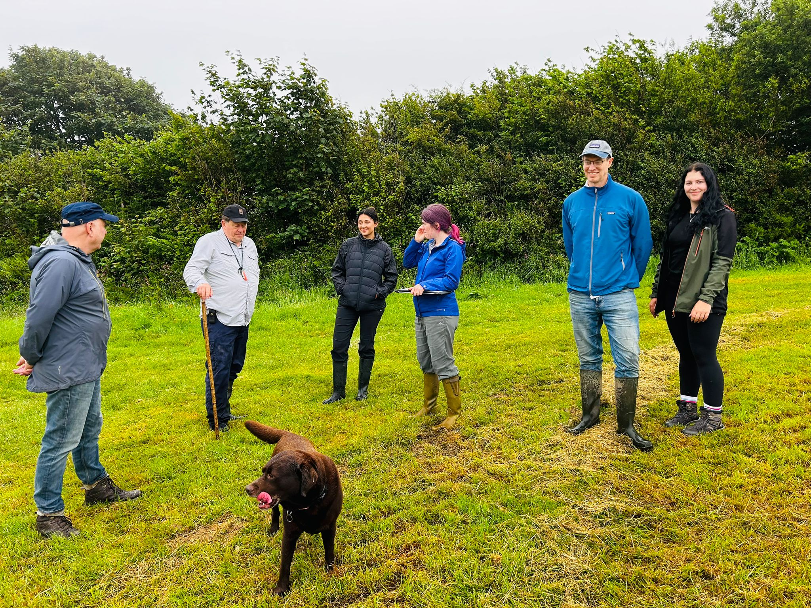

Meeting Cornwall’s growing demand for Biodiversity Net Gain, Lesnewth Habitat Bank offers 130 BNG units across a 26.8ha registered habitat bank, providing developers with a trusted local solution to meet planning requirements while delivering lasting ecological value.
Situated within the River Valency landscape, Lesnewth borders one of England’s rare temperate Celtic rainforests. Our long-term restoration programme will establish species-rich grassland, woodland, scrub, rural trees and traditional Cornish hedgerows, strengthening ecological connectivity and creating resilient habitats for wildlife.

For developers, it’s high-quality, locally available BNG. For nature, it’s the restoration of one of Cornwall’s most remarkable landscapes.
- BNG units130
- Area26.8 hectares
- Host LPACornwall Council
- NCACornwall
- BGS referenceBGS-221025001
Interested in Lesnewth? Get in touch to discuss unit availability, habitat types, pricing and planning requirements.
Get in touch